Newsroom
Worth passing on.
What operators are sharing. We keep them. Newest first.
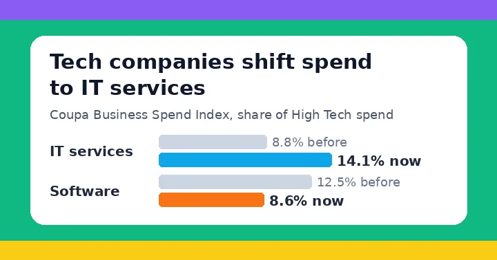
Coupa's Latest Q3 Business Spend Index Report Finds Spend Held Firm Through Six Months of Market and Tariff Shocks
Inside tech companies, IT services rose from 8.8% to 14.1% of spend while software's share fell from 12.5% to 8.6%. Buyers are paying for the people who make new tools work, so spell out who does each setup step and by when.
Coupa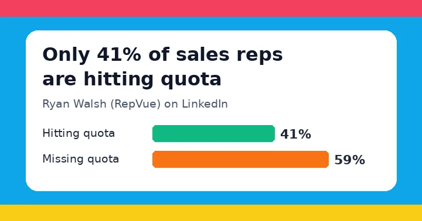
Only 41% are hitting quota
The reasons on this list are company decisions: raised targets, extra reps in a crowded territory, cut marketing, three sales VPs in four years. Good sellers check quota attainment before they join, so know yours before you hire.
Ryan Walsh (RepVue)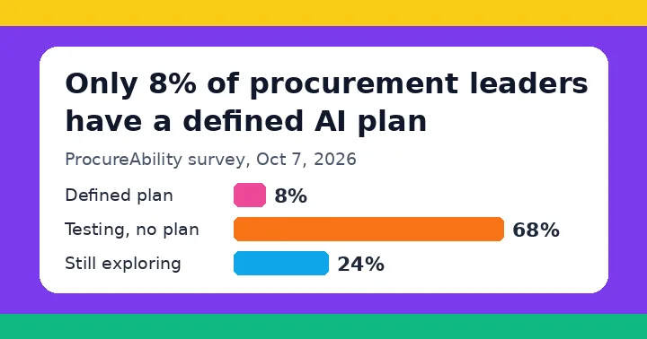
Survey: 68% of Procurement Teams Test AI Without a Formal Plan
Only 8% of the procurement leaders ProcureAbility surveyed have a defined plan for AI, and 47% say it is hard to tell useful tools from overhyped ones. A demo on clean sample data blends in, so run one real, messy example of theirs through your product while they watch.
24/7 Staff (Supply Chain 24/7)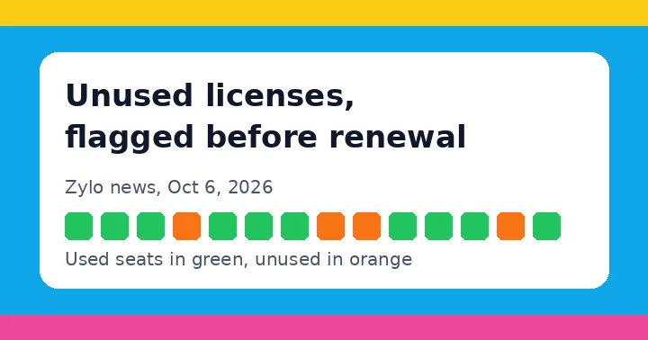
Zylo Ushers in a New Era of Agentic SaaS Management
Big companies can now ask Zylo, in plain English, for every unused software license before a renewal. That list can reach your buyer's boss before you hear anything, so check who stopped using your product well before renewal and call them.
Zylo (PRWeb)
Orchestration extended: SAP to sell ORO Labs platform
SAP will brand, sell, and support ORO Labs' procurement software, so SAP customers can buy it through the relationship they already have. Most startups first have to get set up as a new vendor, so ask early how long that takes.
Annette Slunjski (SAPinsider)
Schneider Electric acquires PTC for 22.6 billion
PTC's design and product data software runs at more than 30,000 companies, and the deal is not expected to close until the third quarter of 2027. Every one of those customers now has questions about support, roadmap, and renewal.
Berry Zwets (Techzine Global)
Mastercard and BMO pull payments inside enterprise software
Card payments now run inside the ERP, procurement, and accounts payable tools finance teams already use. Ask early which system your product has to live inside.
Molly Snaylam (FinTech Global)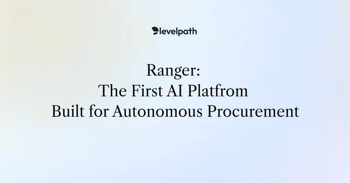
Ranger: The First AI Platform for Autonomous Procurement
Sourcing, contract review, supplier risk, and invoice approval now run as one connected process. A deal that lives in one inbox still has to clear every one of them.
LevelpathThe Most Common Go-to-Market Questions This Expert Gets from Early Founders
An ICP that is still a company-size guess will fill the calendar with mismatches. Score first calls. Define ICP by operational signals.
Emery RosanskyStop Looking For Sales Magicians
A founder hunting a sales magician is usually hunting someone else to finish the motion. Stay in the conversations until the pitch and the next step are already proven.
Jason LemkinPipeline mega-post
A founder talking to one or two buyers a week has a calendar problem, not a product problem.
Rob Snyder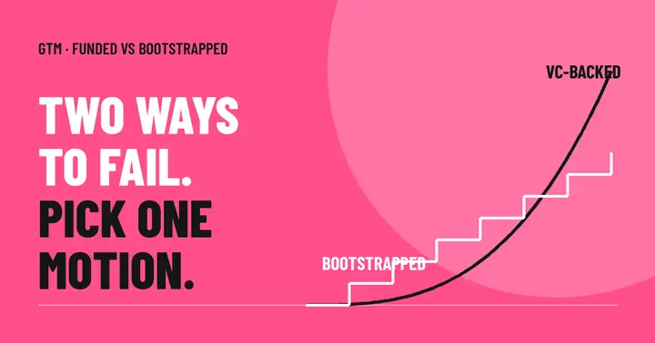
How VC-Funded SaaS GTM Strategies Differ From Bootstrapped Ones
VC-backed GTM and bootstrapped GTM fail in different ways. Same founder job either way: pick one motion and measure it before you scale spend.
Sharné McDonald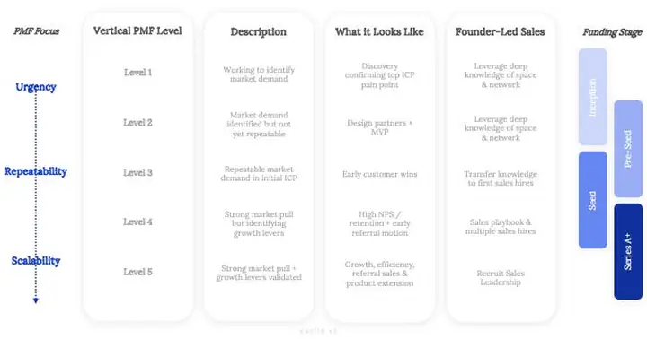
The Truth About Founder-Led Sales
Founder-led sales is strategy, not a phase you graduate from. The first year GTM mistakes are usually about who stays close to the buyer.
Euclid VenturesThe questions that sell
Best sellers are 69 percent stronger at synthesis. They hand the buyer their problem back clearer than the buyer gave it.
Chris Orlob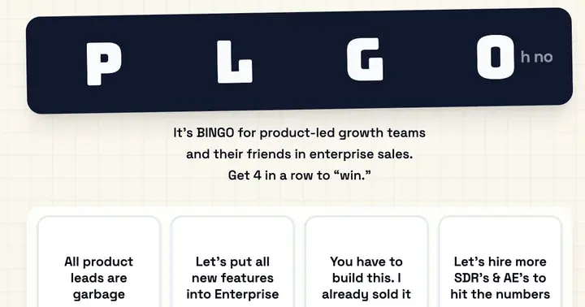
Congrats, your sales problems in PLG are completely unoriginal
The first $100K enterprise deal is not a reason to abandon the product motion that created it.
Elena VernaPost Positioning: Testing and Execution
Test positioning in live sales conversations, not on the homepage. A homepage test cannot tell you why a buyer picked you this week.
April Dunford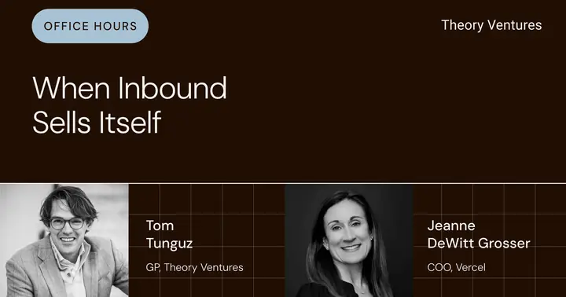
When Inbound Sells Itself
Vercel cut inbound SDRs from 10 to 1.25. The bottleneck is the written workflow, not the model.
Tomasz Tunguz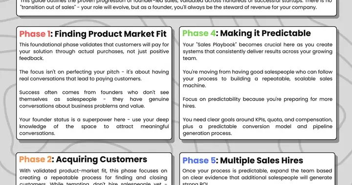
There is no transition out of sales as a founder
Roles change. One founder stays the steward of revenue. Six phases from first customers to a sales leader.
Kyle Poyar with Seth DeHart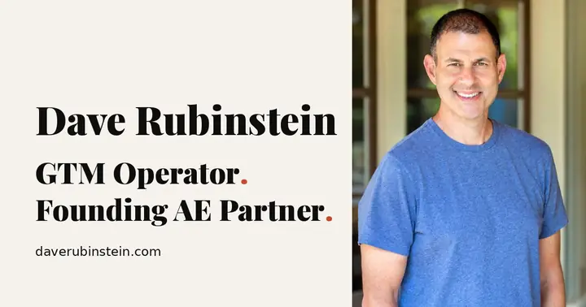
Founder-Led Sales Transition Framework
If you hired sellers and you still close every deal that matters, you skipped the middle.
Dave RubinsteinHow SpaceXAI Built Grok Bot in a Month
Grok Bot was developed from concept to launch in seven weeks.
Roman Ugarte (Lenny Rachitsky)Champion Change: You Gotta Jump On It
Big Co Customers change champions frequently over time.
Jason Lemkin (SaaStr)AI-Driven B2B Marketing with Latané Conant
AI can predict customer behavior and personalize marketing efforts.
Latané Conant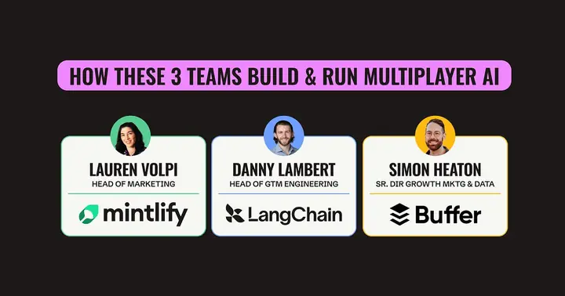
Multiplayer AI Setups Mintlify, LangChain, and Buffer
Context layers, skills, and agents built by real teams.
Emily Kramer (MKT1)AI Agents for Customer Service with Latane Conant
Customer service should not be viewed solely as a cost center.
Latane Conant (6sense)If you're a founder brushing up on Sales 101
Provides guidance on identifying and nurturing best customer relationships.
First Round ReviewThe One Thing That Everyone May Be Too Busy to Worry About: Winning
Highlights the need to track market share.
Dave Kellogg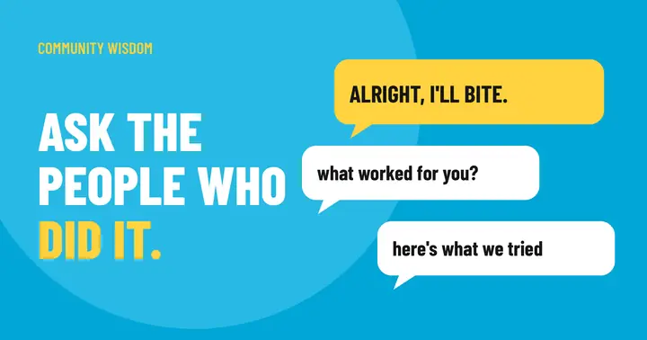
Alright... | Will Allred
Community-driven wisdom and advice.
Will Allred (Lavender)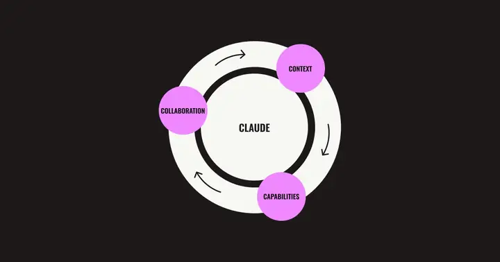
Marketing teams are stuck in single-player Claude mode. Here's how to go multiplayer.
4 Cs framework for sharing context and skills across the team.
Emily Kramer (MKT1)Clouded Judgement 8.21.26 - What Could Go Right?
Overall median 4.3x EV/NTM revenue. Top 5 median 30.5x. High-growth median 17.2x.
Jamin Ball (Clouded Judgement)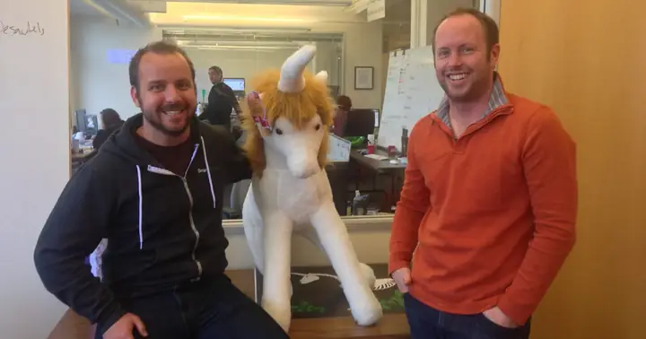
You're Losing Hundreds of Thousands of Dollars Because of Poor Sales Onboarding
Missed or slow sales after a hire is opportunity cost, not a training nicety.
Peter Kazanjy (First Round Review)9 Steps to Repeatable, Scalable, and Profitable Growth
9-step model covers product/market fit and GTM strategy.
David SkokBoard Meetings: Your Notetaker Is Not Welcome Here
AI notetakers are discouraged from board meetings.
Dave Kellogg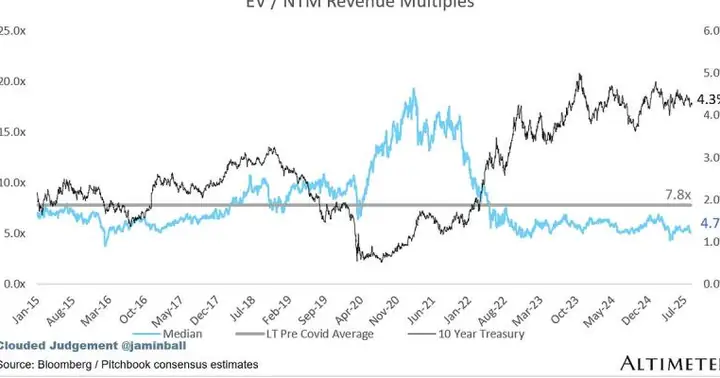
Jamin Ball - Clouded Judgement 8.15.25
Median software multiple: 4.7x, High Growth software median: 30.5x.
Jamin Ball (Clouded Judgement)The twilight of the chatbots
AI is transforming how tasks are performed and managed in organizations.
Ethan MollickWhat it feels like to work with Mythos
Advanced AI like Claude Fable represents a significant leap in capability.
Ethan MollickNo posts match.